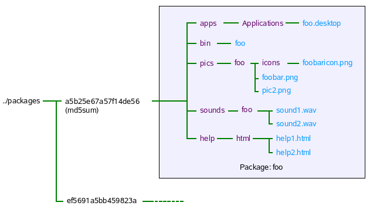

| Home · All Classes · Grouped Classes · Annotated · Functions |
Qtopia uses a custom .qpk format for installable packages. Each .qpk file consists of program files organized in a specific directory structure that has been compressed.
It should be stressed that the qpk installation system was not meant to be a general purpose package installation system like ipkg. Packages installed with the qpk format have a number of limitations:

To take advantage of the resource system, resources such as images and sounds should be installed into specific directories.
To register images, the pics install hint should be used in the project file. Be aware that the install task .path must be /pics/<appname> where <appname> refers to the application executable filename. Icons and images which depend on the language need to be placed in particular directories as outlined in the installpic Algorithm.
Assuming that there is a image called foobar.png and an icon called foobaricon.png, then the following code can be used to access those resources:
QPixmap myPic(":image/foobar");
QIcon myIcon(":icon/foobaricon");
The icon that associated with the application needs to be specified in a .desktop file. The Icon field should look something like:
[DesktopEntry]
...
Icon=<appname>/iconfile
...
To register sounds an install task should be specified like so:
foo.files=sounds/*
foo.path=/sounds/<appname>
INSTALLS+=foo
Assuming that there is a sound called foobar.wav, then the following code can be used to access that sound:
QSound mySound(":sound/foobar");
To provide help information to users, the help install hint should be used. Bear in mind that the help files are placed in <helproot>/html or <helproot>/<lang>/html and not directly in the <helproot> directory.
At least one help file should be provided called <appname>.html where appname is the application binary name. This is the first help file that is presented to the user when the help option in the soft menu is invoked. Any other help files should be of the form <appname>-suffix.html eg. myapplication-howto.html.
As a side note, you may use QSoftMenuBar::menuFor() to generate a context menu which has a help option.
To make a package available for download and installation follow these steps:
Note: For a default apache2 installation, content will be served from /srv/www/htdocs.
You will likely need root privileges to create the feed directory and set the desired ownership. For example:
sudo mkdir -p /srv/www/htdocs/feed
sudo chown user.group /srv/www/htdocs/feed
where user and group are the user name and group name of the user who will publish packages.
sudo cp myappp.qpk /srv/www/htdocs/feed
cd /srv/www/htdocs/feed
sudo $QPEDIR/bin/mkPackages
(Aside: mkPackages allows you to specify the feed directory directly eg mkPackages /srv/www/htdocs/feed, this will recursively search through the current directory for any packages, copy them into the feed and generate the packages.list; be sure to remove any i18n "packages" first.)
[Local packages]
http://10.10.10.21/feed
active=true
The packages.list file is divided into sections - one per available package.
Each section consists of multiple lines containing mandatory properties of a package as shown in the following table:
| Property | Description |
|---|---|
| Package | Name of the package displayed by the Software Packages application. |
| Filename | File name of the package. |
| Size | Size of the compressed package in bytes. |
| MD5Sum | MD5 sum of the package file. |
| Description | Package information. |
| Maintainer | Person or company responsible for package maintenance. |
| License | License type such as Commercial or GPL. |
| Version | Version of the application packaged. |
| Trust | Packages can be trusted or untrusted. |
| Arch | CPU architecture of the device such as arm or i386. |
| Architecture | Device name: for example, Greenphone. |
| Domain | SXE domains which the package requires to run delimited by comma: for example, window,docapi. |
| Files | All files contained in the package separated by space including their default installation paths. |
| Installed-Size | Size of the package after its decompression and installation. |
| QtopiaVersion | The versions of Qtopia this package is compatible with. |
| Devices | The type of devices this packages is compatible with. |
To isolate any problem if a package is not installing, turn on Package Management logging either via the Settings->Logging application or by editing the Log.conf file and then restart qtopia. The log output will provide more detailed information on what is happening during package installation.
The logging out put can be viewed in a number of ways
Q: My packages are in the feed directory but why I can't see them with Software Packages?
A: Ensure that you have re-generated the packages.list file with mkPackages. Also ensure that the package is compatible with the version of Qtopia on the device and the device itself, otherwise they will not be visible and cannot be installed. Turning on Package Mangement logging help will give more details.
Q: I have a package from Qtopia version x but i want to use it on Qtopia version y but I can't because x and y are not binary compatible.
A: If you want to try a package that is not compatible with the version of Qtopia on the device you can use the modqpk script to modify the package's QtopiaVersion field. QtopiaVersion consists of a comma delimited list of versions which can include ranges eg, 4.1,4.2.0-4.2.4. Generally, it is not recommended that this be done.
Q: I've made a qpk package for the desktop and am running Qtopia with qvfb and it works fine, but when I try the same qpk on another desktop machine, the package doesn't run.
A: The runtime library path is hardcoded into the package executable at compile time. On a device this isn't a problem since all the devices will have the same file system structure. For the desktop, the situation is different since on one machine the path may be /home/bob/Qtopia/lib while on another it's /home/bert/Qtopia/lib; a workaround may be to modify the LD_LIBRARY_PATH or just recompile the package for the other machine.
| Copyright © 2008 Trolltech | Trademarks | Qtopia 4.3.1 |